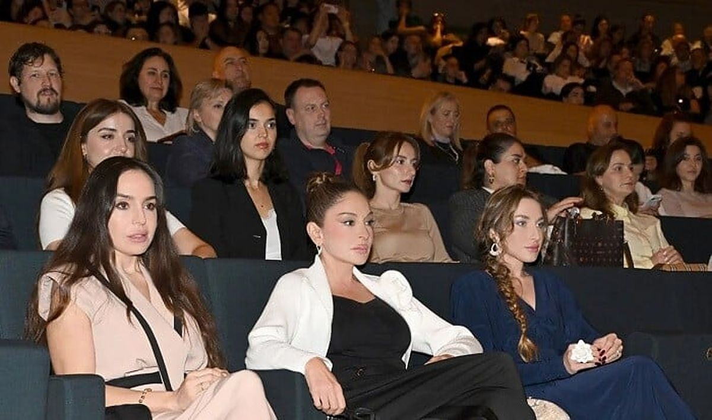

Devid Qarrett Bakıda möhtəşəm simfonik şou təqdim etdi

KonsertPaytaxtımızda dünya şöhrətli musiqiçinin unudulmaz çıxışı baş tutub. Heydər Əliyev Mərkəzində təşkil olunan möhtəşəm simfonik şou izləyicilərə unikal anlar bəxş edib.
Paytaxtda möhtəşəm musiqi gecəsi
Məlumat verilir ki, Bakıda dünyaşöhrətli skripkaçı Devid Qarrett "Millennium Symphony - Crossover Programme" adlı simfonik şousu ilə səhnəyə çıxıb. Bildirilir ki, Azərbaycan Respublikasının Birinci vitse-prezidenti Mehriban Əliyeva və ailə üzvləri də bu möhtəşəm konserti izləyənlər arasında olublar. Sənətçi klassik musiqi ilə rok, pop və məşhur kino melodiyalarını məharətlə birləşdirərək tamaşaçılara fərqli ab-hava yaşadıb.
Qeyd olunur ki, konsert proqramında Bethovenin, Hans Zimmerin, Maykl Ceksonun, həmçinin "Nirvana" və "Rammstein" kimi məşhur qrup və sənətçilərin əsərləri ifa edilib. İstedadlı musiqiçi hələ uşaq yaşlarından səhnə fəaliyyətinə başlayıb və dünyanın tanınmış dirijorları ilə əməkdaşlıq edib. Onun "ICONIC" adlı klassik albomu isə beynəlxalq miqyasda böyük uğurlar qazanaraq müxtəlif nüfuzlu mükafatlara layiq görülüb.
Mənbə: Axar.az